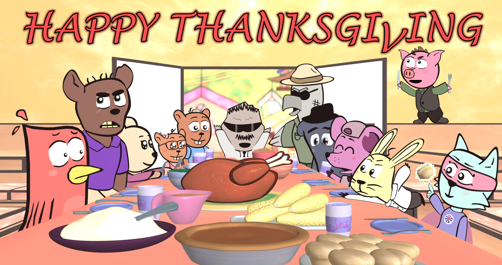
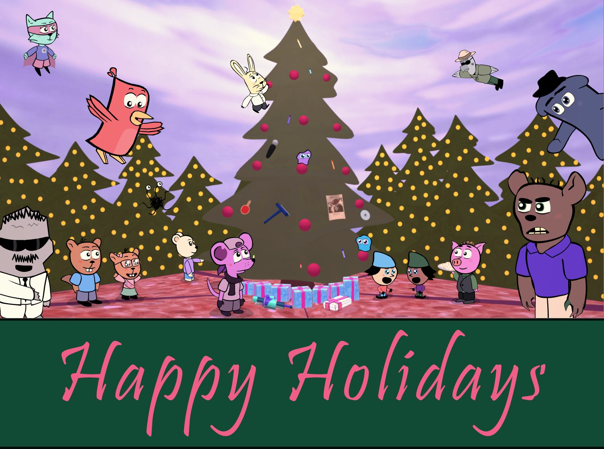
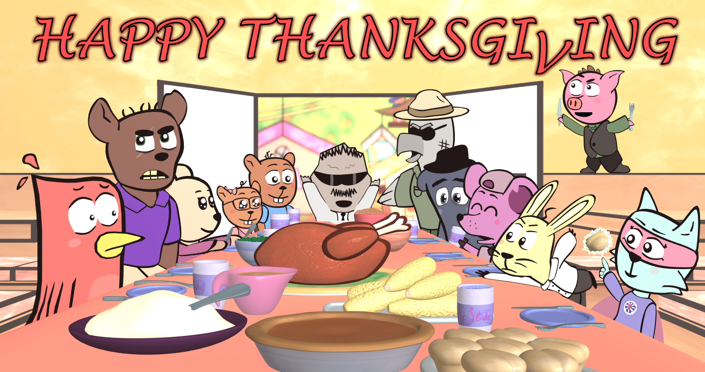
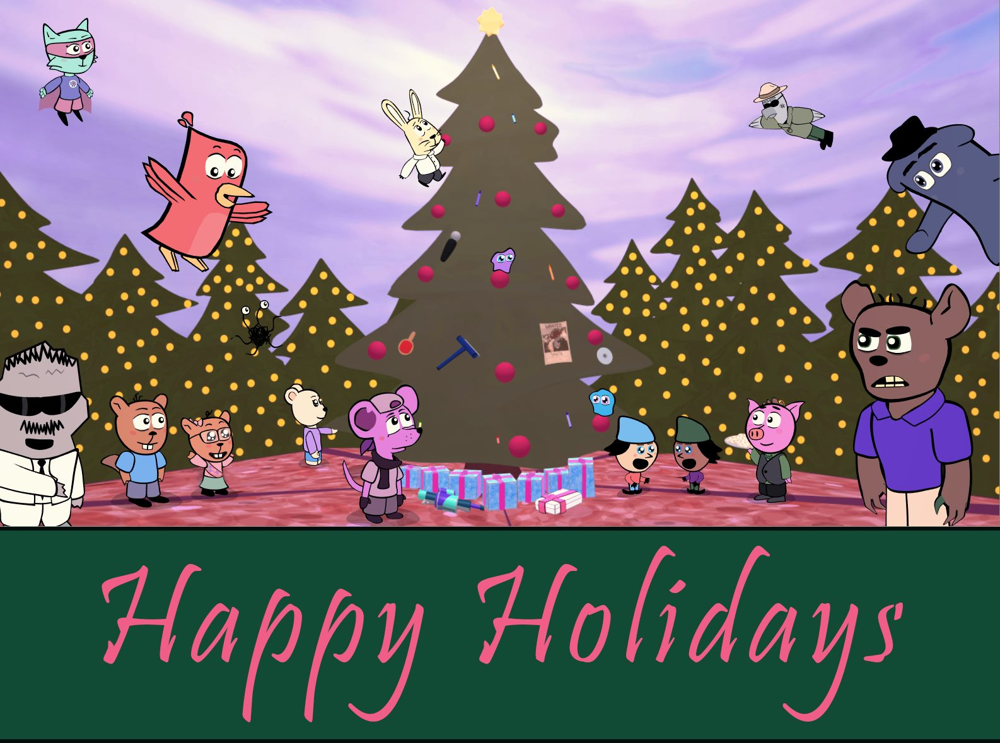

What is WACKY TOWNS?
In May 2018, Emerson Chan and I premiered the pilot to Wacky Towns at the San Jose State University FPS Fest. Even at this small school film festival, we were nobodies. But against all odds, we won the award for Best Picture alongside our team of fellow student artists.
A successful festival run followed. But unfortunately, the pilot was not picked up afterwards. The Wacky Towns Team didn't let that get their hopes down. When we began production for Episode 2, it became our goal to have fun, learn more valuable skills, and create an entertaining show.

In 2021, both episodes (including an additional promo short) were remastered and compiled into one TV-length pilot.

 


